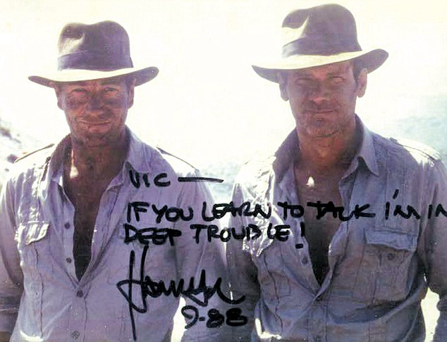

DOBLES
y
otras herramientas
@Test
Los desarrolladores conocen los dobles de prueba y patrones como TestDataBuilder
Cuando queremos probar algo y es complicado podemos necesitar ayuda. Hay muchos dobles de prueba
Dobles de prueba
¿Qué mejor que ver por qué los necesitamos?
Let's code!

- 000-base
- Queremos probar algo complicado...
Dummy!
- 010-dummies
- Simular objetos

No es sólo eso
- 020-stubs
- Devolver valores
No siempre sale todo bien
- 030-stubs_saboteando
- Probar situaciones de error
- 040-mocks
- Probar comportamiento
- 050-spies
- Grabar lo que hace el método
Alguno pensará... me gusta hacerlo sólo
- 060-fixtures
- Establecer valores iniciales
- 070-fixtures_automaticos
- Cargar valores iniciales de ficheros
- 080-testdatabuilders
- Crear objetos con variaciones fácilmente
Hay varias herramientas para lidiar con...
BD: sandbox, fixtures, rollback...
GUI: grabación, runners locales, monkey testing